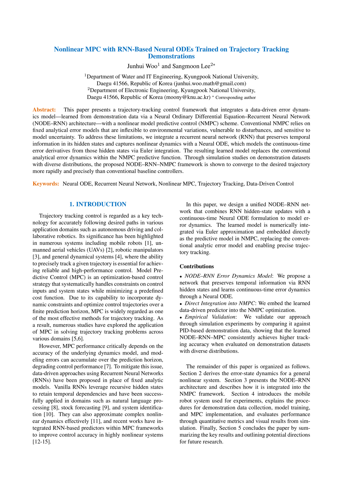
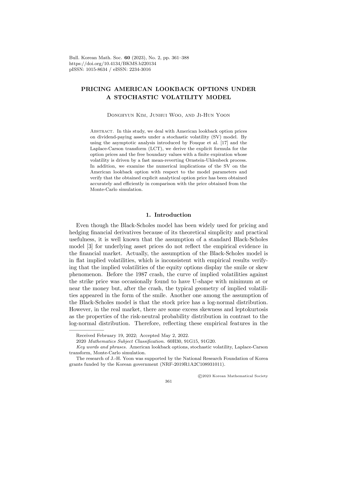
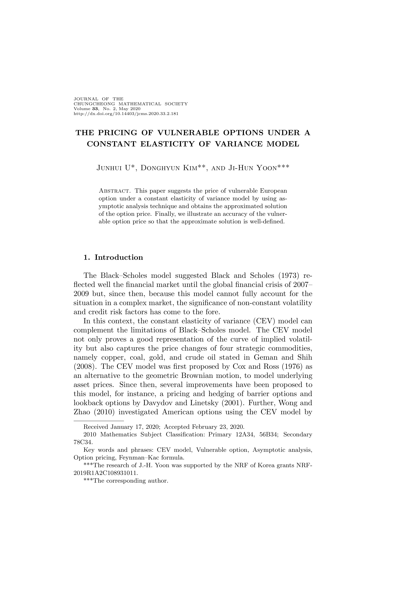

📚 Publications
* Note: [J] Journal Paper, [P] Conference Proceedings | * Corresponding Author (Supervisor)
📰 Journal Paper
-
[J1]
Error-Driven Reasoning Intelligence for Imitation Learning Beyond Demonstrator Performance with Certified Contractivity [SCI(E)]
Junhui Woo, Sangmoon Lee*
IEEE Transactions on Cybernetics, Under Review (Submitted: May 2026). -
[J2]
Enhancing Trajectory Tracking via Neural ODE-Based MPC with One-Shot Learned Error Dynamics [SCI(E)]
Junhui Woo, Taeyeong Kim, Sangmoon Lee*
International Journal of Robust and Nonlinear Control, Under Review (Submitted: March 2026). -
[J3]
Pricing American Lookback Options under a Stochastic Volatility Model [SCI(E)]
Donghyun Kim, Junhui Woo, Ji-Hun Yoon*
Bulletin of the Korean Mathematical Society, vol. 60, no. 2, pp. 361–388, 2023. -
[J4]
The Pricing of Vulnerable Options under a Constant Elasticity of Variance Model [KCI]
Junhui Woo (Previously published as: Junhui U.), Donghyun Kim, Ji-Hun Yoon*
Journal of the Chungcheong Mathematical Society, vol. 33, no. 2, pp. 181–195, 2020.
🎤 Conference Proceedings
-
[P1]
Neural ODE Predictive Control with Error Dynamics Learned from Demonstrations for Trajectory Tracking
Junhui Woo, Taeyeong Kim, Sangmoon Lee*
Proceedings of the International Federation of Automatic Control World Congress (IFAC 2026), Accepted. -
[P2]
Nonlinear MPC with RNN-Based Neural ODEs Trained on Trajectory Tracking Demonstrations
Junhui Woo, Sangmoon Lee*
Proceedings of the 25th International Conference on Control, Automation and Systems (ICCAS 2025), pp. 368–373, 2025.

Conference Proceedings

Journal Article (SCIE)

Journal Article